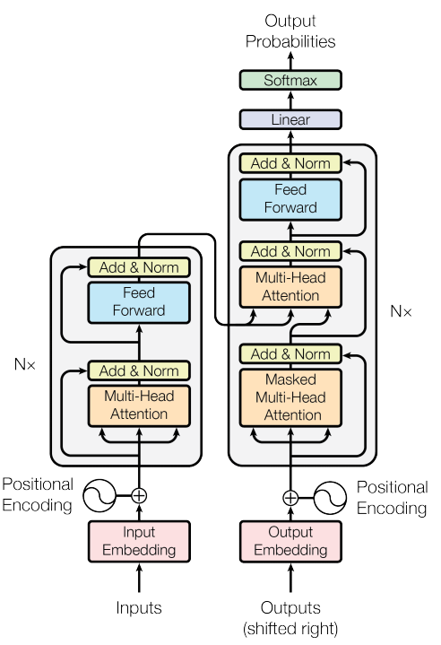
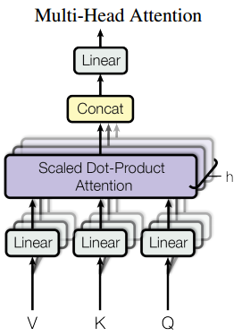
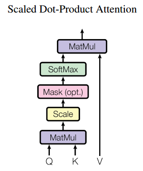

理解transformer网络结构
先看整体结构：

首先是嵌入层embedding，将inputs和outputs的token转换为向量。解码器在做预测时输入是之前时刻解码器的输出，因此这里写的右移（shiftrd right）。
positional encoding将序列信息加入向量中。RNN通过将上一个时刻的输出作为下一个时刻的输入之一学习到了数据中的时序信息，在transformer中，后续的attention仅计算加权和，没有时序信息（但也因此获得了并行的优势），因此在positional encoding这里将时序信息编码之后加入输入之中，否则的话学习不到时序信息，一组token打乱顺序输入也不会有区别。
在编码器中，有n个相同的层，每个层包括多头自注意力层和前馈神经网络层两个子层，每个子层都采用残差连接和层标准化。残差连接解决网络层数加深时梯度爆炸、梯度消失等问题。层标准化对每个样本进行标准化，而批标准化对每个特征进行标准化，在时序数据中样本长度可能变化会比较大，因此经过填充后批标准化的结果波动比较大。

多头注意力相对于单头注意力来说，进行h次不同映射的投影，将每个attention的输出拼接起来作为最终的输出，借此学习到更丰富的信息，这类似于三维卷积中通过多个卷积核进行卷积来学习到更丰富的信息。
为什么叫自注意力呢，因为在编码器和解码器的第一个子层中，输入同时作为V、K、Q。

这里K（key，键）、Q（query，查询）、V（value，值）是理解注意力机制的核心。我们用两个向量的内积来衡量他们的相似程度，直观的看夹角较小的时候相似度较高，内积结果为正，正交时内积结果为0，表示两个向量不相关，结果为负同样也是不相关。
$Attention(Q, K, V ) = softmax(\frac{QK^T}{\sqrt{d_k}})V$
Q指出应注意的部分，更准确地说， 用于“询问”序列中其他位置的信息 ，K 决定了当前位置对其他位置的响应强度，即哪些位置的信息与当前查询相关。 通过矩阵乘法就能并行地计算出key和query的相关性，到目前为止这里的操作就是点积注意力（ Dot-product attention ）。之后再进行归一化，除以$\sqrt{d_k}$，这就是论文所说的 Scaled Dot-Product Attention。结果经过softmax函数调整后就是value的权重，与value矩阵相乘作为最终输出，V携带实际需要传播的信息。除以$\sqrt{d_k}$是因为作者认为当$d_k$的值较大时，点积在幅度上变大，将softmax函数推入梯度极小的区域。为了抵消这种影响，将点积缩放。
对于解码器的第一个多头注意力层，我们在做预测时应该根据此时刻之前的所有信息进行预测，不应看到此时刻之后的信息（不然作弊了），因此还需要进行一个掩码操作，掩盖此时刻之后的信息。具体地说，将此时刻之后的信息设定为负无穷或者一个很大的负数，经过softmax变换后就会变为0。
前馈神经网络层就是一个简单的多层感知机：一个线性变换层，一个relu激活函数，再一个线性变换层，即$FFN(x) = max(0, xW_1 + b_1)W_2 + b_2$。
在编码器与解码器的连接中，query来自解码器上一个层， 动态表达当前生成位置的信息需求 。而key和value来自编码器的输出， 提供输入序列的全局语义库，确保解码器生成时始终以输入为基础，这也与传统编码器-解码器架构一致。最终解码器的输出经过线性层和softmax作为输出，这也是标准的神经网络的做法。
参考资料：
[1] Vaswani, Ashish, et al. “Attention Is All You Need.” Advances in Neural Information Processing Systems, vol. 30, 2017.